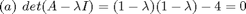
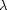
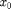
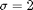

Numerical Analysis Homework 5
Ryan DeJesus, Daniel Gollahon, Ron Quan
Contents
Review 4.1
True [p. 161, para 1]
Review 4.2
False [p. 159, para 2]
Review 4.3
False [i.e. any vector is an eigenvector with an eigenvalue of one if the matrix is the identity matrix]
Review 4.4
False [see example 4.9 for one instance]
Review 4.6
True
Exercise 4.1
(a) Prove that 5 is an eigenvalue of the matrix
A = [6 3 3 1; 0 7 4 5; 0 0 5 4; 0 0 0 8];
result = eig(A);
disp('5 is in the following vector containing the real eigenvalues of matrix A:');
disp(result);
5 is in the following vector containing the real eigenvalues of matrix A:
6
7
5
8
(b) Exhibit an eigenvector of A corresponding to the eigenvalue 5 To answer this problem, we must solve Ax = 5*x = (A-5*eye(4))x = 0
[A,B] = eig(A)
AL = A - 5*eye(4);
result = null(AL);
disp('Eigenvector corresponding to eigenvector 5:');
disp(result);
A =
1.0000 0.9487 0.8018 0.8645
0 0.3162 -0.5345 0.4963
0 0 0.2673 0.0640
0 0 0 0.0480
B =
6 0 0 0
0 7 0 0
0 0 5 0
0 0 0 8
Eigenvector corresponding to eigenvector 5:
Exercise 4.2
What are the eigenvalues and corresponding eigenvectors of the following matrix?
A = [ 1 2 -4; 0 2 1; 0 0 3]; disp('Eigen Values:'); eig(A) disp('Eigen Vectors are the columns of vector V:'); [V,D] = eig(A); disp(V);
Eigen Values:
ans =
1
2
3
Eigen Vectors are the columns of vector V:
1.0000 0.8944 -0.5774
0 0.4472 0.5774
0 0 0.5774
Exercise 4.3

% = (1-$\lambda$)^2 - 4 = 0 %
(b)  = -1,3
(c) What are the eigenvalues of A?
A = [1 4; 1 1]; eig(A)
ans =
3.0000
-1.0000
(d) What are the eigenvectors of A?
[v,~] = eig(A);
disp( 'Eigen Vectors of A are the column of the following matrix: ' )
disp(v)
Eigen Vectors of A are the column of the following matrix:
0.8944 -0.8944
0.4472 0.4472
(e) Perform one iteration of power iteration on A using  = [1 1]'
x0 = [1 1]';
% The following is used for normalized power iteration:
x1 = A*x0;
LAMBDA = norm(x1);
x1 = x1 / LAMBDA;
disp(x1);
0.9285
0.3714
(f) To what eigenvector of A will power iteration ultimately converge?
[v,d] = eig(A);
The power iteration will converge to the eigenvector corresponding to the dominant eigenvalue (3) which is the eigenvector below.
disp(v(1:end,1));
0.8944
0.4472
(h) To what eigenvector of A would inverse iteration ultimately converge?
The inverse iteration converges to the eigenvector corresponding to the smallest eigenvalue of A (-1). [see p.166, last sentence.]
disp(v(1:end,2));
-0.8944
0.4472
(i) What eigen value of A would be obtained if inverse iteration were used with shift ?
Inverse iteration with a shift of 2 will eventually converge on the eigenvalue of 3 because the process approaches the eigenvalue closest to the shift.
Exercise 4.5
(a)
Matrix A & row sums: |a11 a12 . . a1n| row1 sum = a11 + ... + a1n = alpha |a21 . . . a2n| ... | . . . . . | ... | . . . . . | ... |an1 . . . ann| rown sum = an1 + ... + ann = alpha
A*x: |a11 a12 . . a1n| | x1| = a11*x1 + ... + a1n*x1 = (a11 + ... + a1n)*x1 = alpha*x1 |a21 . . . a2n| | x2| = a21*x2 + ... + a2n*x2 = (a21 + ... + a2n)*x2 = alpha*x2 | . . . . . | | . | ... | . . . . . | | . | ... |an1 . . . ann| | xn| = an1*xn + ... + ann*x2 = (an1 + ... + ann)*xn = alpha*xn
A*x is equivalent to... alpha*x1 = | x1| alpha*x2 = | x2| ... = alpha * | . | => Ax = alpha*x, which is the alpha*xn-1 = | . | definition of an eigenvalue alpha*xn = | xn|
(b)
The eigenvector would be: |1| | x1| |.| | . | |.| = | . | |.| | . | |1| | xn|
Exercise 4.8
A similarity transformation uses a non-singular matrix T to diagonalize some matrix A. We know T must be non-singular because the transformation involves T^-1 and only non-singular matrices are invertible. From that we can see:
T^-1*A*T = T^-1*A[x1|x2|...|xn]
= T^-1*[Ax1|Ax2|...|Axn]
= T^-1*[lambda1*x1|labda2*x2|...|lambdan*xn]
= T^-1*[lambda1*(T*e1)|labda2*(T*e2)|...|lambdan*(T*en)]
= T^-1*[T*(lambda1*e1)|T*(labda2*e2)|...|T*(lambdan*en)]
= T^-1*T*[lambda1*e1|lambda1*e2|...|lambdan*en]
= In*[lambda1*e1|lambda1*e2|...|lambdan*en]
= [lambda1*e1|lambda1*e2|...|lambdan*en]
= D
(note: e is the standard unit vector)Since T^-1*A*T = D AT = DT, since all column of T are linearly independent (because it is non-singular ) this means the columns of T are eigenvectors with eigenvalues in D, so there are n linearly independent eigenvectors and this means the matrix can be transformed using a similarity transformation.
Computer Problem 4.2
(a) Implement power iteration to compute the dominant eigenvalue and a corresponding eigenvector of the matrix A:
function [ x, LAMBDA] = Power_it( A,x )
[m,n] = size(A);
%x = rand(m,1);
for i = 1:500
x = A*x;
LAMBDA = norm(x);
x = x/LAMBDA;
end%forx; LAMBDA; end
A = [2 3 2; 10 3 4; 3 6 1]; x0 = [0 0 1]'; [first_eig_vec_answer, first_eig_val_answer ] = Power_it(A,x0); disp('The dominant eigenvalue:'); disp(first_eig_val_answer); disp('The eigenvector corresponding to the dom eigenvalue:'); disp(first_eig_vec_answer);
The dominant eigenvalue:
11.0000
The eigenvector corresponding to the dom eigenvalue:
0.3714
0.7428
0.5571
(b) Using any of the method for deflation given in Section 4.5.4, deflate out the eigenvalue found in part a
H = House_matrix(first_eig_vec_answer); H*first_eig_vec_answer; Eig_Diag_Matrx = H*A*inv(H);
Applying power iteration again to compute the second largest eigenvalue of the same matrix Refer to page 179 for help
B = Eig_Diag_Matrx(2:end,2:end); x0 = rand(2,1); [second_eig_vec_answer, second_eig_val_answer] = Power_it(B,x0); % second_eig_vec_answer = V(:,1) % second_eig_val_answe = D(1) disp('The second largest absolute eigenvalue is:'); disp(second_eig_val_answer); bT = Eig_Diag_Matrx(1,2:end); alpha_num = bT*second_eig_vec_answer; alpha_den = second_eig_val_answer - first_eig_val_answer; alpha = alpha_num/alpha_den; right_matrix = [alpha; second_eig_vec_answer]; x2 = inv(H)*right_matrix;
The second largest absolute eigenvalue is:
3.0000
disp('To enhance accuracy, the second eigenvalue and eigenvector found from the newly deflated matrix '); disp('is refined using inverse iteration on the original matirix with a shift equal to the approximate eigenvalue found from earlier calculations.'); disp('.'); disp('The eigenvector corresponding to the second largest absolute eigenvalue is:'); [x2, second_eig_val_answer] = Inv_power_it(A,x2,second_eig_val_answer ); x2 = -1 * x2
To enhance accuracy, the second eigenvalue and eigenvector found from the newly deflated matrix
is refined using inverse iteration on the original matirix with a shift equal to the approximate eigenvalue found from earlier calculations.
.
The eigenvector corresponding to the second largest absolute eigenvalue is:
x2 =
0.0000
-0.5547
0.8321
(c) Use a general real eigensystem library routine to compute all of the eigenvalues and eigenvectors of the matrix, and compare the results with those obtained in parts a and b
[eig_vectors eig_values] = eig(A); disp('First largest absolute eigenvalue produced from eig(A):'); disp(eig_values(1,1)); disp('First dominant eigenvalue produced from our power iteration calculation:'); disp(first_eig_val_answer); disp('Vector corresponding to second largest absolute eigenvalue produced from eig(A):'); disp(eig_vectors(1:end,1)); disp('Vector corresponding to second dominant eigenvalue produced from our power iteration calculation:'); disp(first_eig_vec_answer); disp('Second largest absolute eigenvalue produced from eig(A):'); disp(abs(eig_values(3,3))); disp('Second dominant eigenvalue produced from our power iteration calculation:'); disp(second_eig_val_answer); disp('Vector corresponding to second largest absolute eigenvalue produced from eig(A):'); disp(eig_vectors(1:end,3)); disp('Vector corresponding to second dominant eigenvalue produced from our power iteration calculation:'); disp(x2);
First largest absolute eigenvalue produced from eig(A):
11.0000
First dominant eigenvalue produced from our power iteration calculation:
11.0000
Vector corresponding to second largest absolute eigenvalue produced from eig(A):
0.3714
0.7428
0.5571
Vector corresponding to second dominant eigenvalue produced from our power iteration calculation:
0.3714
0.7428
0.5571
Second largest absolute eigenvalue produced from eig(A):
3.0000
Second dominant eigenvalue produced from our power iteration calculation:
3.0000
Vector corresponding to second largest absolute eigenvalue produced from eig(A):
-0.0000
-0.5547
0.8321
Vector corresponding to second dominant eigenvalue produced from our power iteration calculation:
0.0000
-0.5547
0.8321
Computer Problem 4.3
a) Implementing inverse iteration to find the eigenvector and corresponding eigenvalue closest to 2
A = [6 2 1; 2 3 1; 1 1 1]; x = rand(3,1); %arbitrary starting vector for k = 1:5 % 5 iterations shift = 2; %using 2 as our shift value x = (A - eye(3)*shift) \ x; %compute the next iteration of the vector x = x / norm(x); %normalizing end eigenvector = x lambda = norm(A*x) / norm(x) % % b) Calculating eigenvectors/values using a library routine. [V,D] = eig(A)
eigenvector =
-0.4974
0.8196
0.2843
lambda =
2.1331
V =
-0.0432 -0.4974 -0.8664
-0.3507 0.8196 -0.4531
0.9355 0.2843 -0.2098
D =
0.5789 0 0
0 2.1331 0
0 0 7.2880
The calculated eigenvalue/eigenvector appears to be the same with the amount of precision shown. The values converged quickly to the correct output when using inverse iteration.